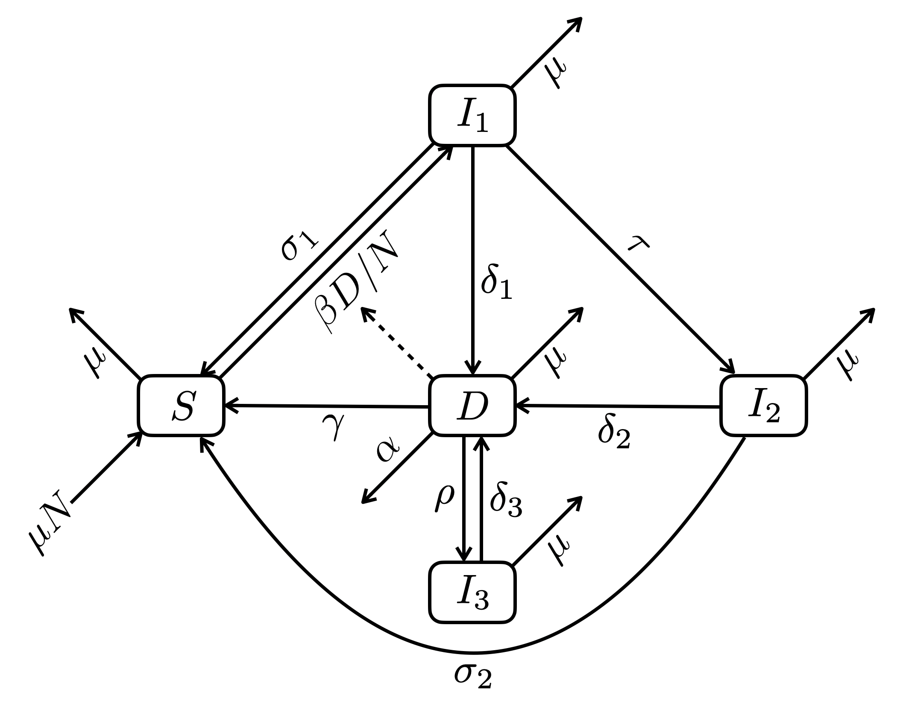

library(tibble)TPT model
All the data and source code files are here.
You can ask report errors or for additional analysis here.
1 Introduction
2 Packages
Required: deSolve, tibble
3 Utilitary functions
ode2 <- function(...) tibble::as_tibble(as.data.frame(deSolve::ode(...)))4 Epidemiological model
4.1 Assumptions
- Constant population size
- No population structure other than clinical status
4.2 Variables
- \(S\): non-infected
- \(I_1\): recently infected
- \(I_2\): infected a long time ago
- \(I_3\): treated but not sterilized
- \(D\): sick and infectious (we do not discriminate PTB from EPTB)
- \(N = S + I_1 + I_2 + I_3 + D\)
Note: only \(D\) are infectious.
4.3 Parameters
- \(\beta\): infectious contact rate (/ind)
- \(\sigma_1\) and \(\sigma_2\): clearance rates of \(I_1\) and \(I_2\) respectively, either through natural immunity or prophylactic treatment
- \(\delta_1\), \(\delta_2\) and \(\delta_3\): progression rates of infection to disease for \(I_1\), \(I_2\) and \(I_3\) (relapse) respectively
- \(\gamma\): rate of recovery with clearance either from treatment or natural immunity
- \(\rho\): rate of recovery without clearance (ultimately leading to relapse)
- \(\tau\): rate at which infected transit from a status of recent infection to a status of non-recent infection
- \(\mu\): demographic turn-over rate (i.e. birth and death rates equal, see assumption on constant population size)
- \(\alpha\): death rate due to TB
Note: all these rates are per year and per capita.
4.4 Flow diagram

4.5 Differential equations
\[ \begin{align} \frac{dS}{dt} &= \mu N + \sigma_1 I_1 + \sigma_2 I_2 + \gamma D - \left(\mu + \beta \frac{D}{N} \right) S \\ \frac{dI_1}{dt} &= \beta \frac{D}{N} S - (\mu + \sigma_1 + \delta_1 + \tau) I_1 \\ \frac{dI_2}{dt} &= \tau I_1 - (\mu + \delta_2 + \sigma_2) I_2 \\ \frac{dI_3}{dt} &= \rho D - (\mu + \delta_3) I_3 \\ \frac{dD}{dt} &= \delta_1 I_1 + \delta_2 I_2 + \delta_3 I_3 - (\mu + \alpha + \gamma + \rho) D \end{align} \]
4.6 R code
epi_dynamics <- function(
S0, I10, I20, I30, D0,
beta, sigma1, sigma2, delta1, delta2, delta3, gamma, tau, rho, mu, alpha, times) {
N <- S0 + I10 + I20 + I30 + D0
ode2(c(S = S0, I1 = I10, I2 = I20, I3 = I30, D = D0),
times,
function(time, state, pars) {
with(as.list(c(state, pars)), {
foi <- beta * D * S / N
dS <- mu * (N - S) + sigma1 * I1 + sigma2 * I2 + gamma * D - foi
dI1 <- foi - (mu + sigma1 + delta1 + tau) * I1
dI2 <- tau * I1 - (mu + delta2 + sigma2) * I2
dI3 <- rho * D - (mu + delta3) * I3
dD <- delta1 * I1 + delta2 * I2 + delta3 * I3 - (mu + alpha + gamma + rho) * D
list(c(dS, dI1, dI2, dI3, dD))
})
},
c(beta = beta, gamma = gamma, rho = rho,
sigma1 = sigma1, sigma2 = sigma2,
delta1 = delta1, delta2 = delta2, delta3 = delta3,
mu = mu, alpha = alpha))
}4.7 TB data
- infection prevalence: 322 (95% CI: 260–399) TB cases/100,000 adults (Nguyen et al. PLoS ONE 2020)
- 5-10% of those infected develop TB in their lifetime
- 125,000 new TB cases in Vietnam in 2018
epi_dynamics(
S0 = 1e5,
I10 = ,
I20 = ,
I30 = ,
D0 = ,
beta = 8,
sigma1 = ,
sigma2 = ,
delta1 = ,
delta2 = ,
delta3 = .01,
gamma = ,
tau = ,
rho = .15,
mu = .02,
alpha = .3,
times = )